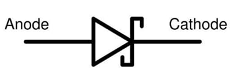

Active components#
Autor: Amirhossein Abolfazli Esfahani
What are active components?#
Active components are semiconductor devices consisting of semiconductor materials. Typical electronic devices are diodes and transistors, for performing “active” operations such as amplifying, rectifying, or converting supplied current (signal). Semiconductors are substances (silicon, germanium and their compound, etc.) having a resistance rate somewhere between a conductor (iron, copper, gold, silver, etc.) and an insulator (rubber, ceramic, etc.). Semiconductor devices can be classified into single-function discrete (diode, transistor), optical semiconductors such as light-emitting devices (LED, laser) and light-receiving devices (photodiode, image pickup element), sensors capable of detecting temperature, pressure, acceleration, magnetism, and integrated circuit (IC) loaded with multiple functions. This article describes diodes and transistors as the most basic element and integrated circuits (ICs), which have become more important in recent years.
Difference Between Active and Passive Component#
the electrical component can be an Active Component or Passive Component the power delivering and absorbing nature. An active Component is a component that delivers power to an electric circuit or components that provide energy to an electric circuit. Passive components are the components that are responsible for absorbing power or energy, components like capacitors and inductors store the energy for further use. Active and Passive components are responsible for the power or energy conservation in the circuit. Apart from this direction of the current decides the nature of the component, componentscurrent current flows outward from the component then it is an Active Component, and if the current flows towards or inwards from the component then it is a Passive Component.
Diode#
Basic explanation about Diode#
In the field of electronics, a diode is a two-terminal electronic component that conducts electric current in only one direction. This term is usually referring to a semiconductor diode (the most common type nowadays) which is a crystal of semiconductor connected to two electrical terminals, a P-N junction. Further discussions are made after discoursing briefly the history of diode. An ideal diode will have zero resistance in one direction, and infinite resistance in the reverse direction. Although in the real world, diodes cannot achieve zero or infinite resistance. Instead, a diode will have negligible resistance in one direction (to allow current flow), and a very high resistance in the reverse direction (to prevent current flow). A diode is effectively like a valve for an electrical circuit.
Formation of Diode#
If a P-type and an N-type material are brought close to each other, both of them join to form a junction.
A P-type material has holes as the majority carriers and an N-type material has electrons as the majority carriers. As opposite charges attract, few holes in P-type tend to go to n-side, whereas few electrons in N-type tend to go to Pside. As this region acts as a barrier between P and N type materials, this is also called as Barrier junction. This has another name called as Depletion region meaning it depletes both the regions. There occurs a potential difference VD due to the formation of ions, across the junction called as Potential Barrier as it prevents further movement of holes and electrons through the junction.
Biasing of Diode#
When a diode or any two-terminal component is connected in a circuit, it has two biased conditions with the given supply. They are Forward biased condition and Reverse biased condition.
Forward Bias#
When a diode is connected in a circuit, with its anode to the positive terminal and cathode to the negative terminal of the supply, then such a connection is said to be forward biased condition. This kind of connection makes the circuit more and more forward biased and helps in more conduction. A diode conducts well in forward biased condition.
Circuits under Forward Bias#
With the repulsive force provided by positive terminal to holes and by negative terminal to electrons, the recombination takes place in the junction. The supply voltage should be such high that it forces the movement of electrons and holes through the barrier and to cross it to provide forward current.
Reverse Bias#
When a diode is connected in a circuit, with its anode to the negative terminal and cathode to the positive terminal of the supply, then such a connection is said to be Reverse biased condition. This kind of connection makes the circuit more and more reverse biased and helps in minimizing and preventing the conduction. A diode cannot conduct in reverse biased condition.
Circuits under Reverse Bias#
When anode and cathode are connected to negative and positive terminals respectively, the electrons are attracted towards the positive terminal and holes are attracted towards the negative terminal. Hence both will be away from the potential barrier increasing the junction resistance and preventing any electron to cross the junction.
Purpose of Diode#
A diode is used to block the electric current flow in one direction, i.e. in forward direction and to block in reverse direction. This principle of diode makes it work as a Rectifier. For a circuit to allow the current flow in one direction but to stop in the other direction, the rectifier diode is the best choice. Thus the output will be DC removing the AC components. The circuits such as half wave and full wave rectifiers are made using diodes, which can be studied in Electronic Circuits tutorials. A diode is also used as a Switch. It helps a faster ON and OFF for the output that should occur in a quick rate.
Types of Diode#
Small Signal Diode#
The appearance of signal diode is very small when compared with the power diode. To indicate the cathode terminal one edge is marked with black or red in color. For the applications at high frequencies the performance of the small signal diode is very effective. With respect to the functional frequencies of the signal diode the carrying capacity of the current and power are very low which are maximum nearly at 150mA and 500mW.
Zener Diode#
It is a passive element works under the principle of zener breakdown. First produced by Clarence zener in 1934.It is similar to normal diode in forward direction, it also allows current in reverse direction when the applied voltage reaches the breakdown voltage. It is designed to prevent the other semiconductor devices from momentary voltage pulses. It acts as voltage regulator.
Zener Characteristics curve with Pyspice#
The graph given underneath shows the V-I characteristics of the Zener diode.
import numpy as np
import matplotlib.pyplot as plt
from PySpice.Unit import *
# Define Zener diode parameters
V_zener = 5.1 # Zener breakdown voltage in volts
R = 1000 # Series resistor in ohms
# Input voltage range (0 to 10V)
V_in = np.linspace(0, 10, 200) # 200 points from 0V to 10V
# Initialize current array
I_out = np.zeros_like(V_in)
# Calculate output current based on the input voltage
for i, v in enumerate(V_in):
if v < V_zener:
# Below Zener breakdown voltage: no current through Zener diode
I_out[i] = 0
else:
# Above Zener breakdown voltage: calculate current through Zener diode
# Using a quadratic relationship for current
I_out[i] = ((v - V_zener) ** 2) / R # Quadratic increase in current
# Plotting the results
plt.figure(figsize=(10, 6))
plt.plot(V_in, I_out, label='Zener Diode Characteristic', color='blue')
plt.axvline(x=V_zener, color='red', linestyle='--', label='Zener Breakdown Voltage (5.1V)')
plt.title('Zener Diode Voltage-Current Characteristic Curve')
plt.xlabel('Input Voltage [V]')
plt.ylabel('Current through Zener Diode [A]')
plt.xlim(0, 10) # Set x-axis limits
plt.ylim(0, np.max(I_out)*1.1) # Adjust y-axis to fit the curve
plt.grid(True)
plt.legend()
plt.show()
Chart description:#
Forward Characteristics of Zener Diode: Forward characteristics of the Zener Diode are similar to the forward characteristics of any normal diode. It is clearly evident from the above diagram in the first quadrant that the VI forward characteristics are similar to other P-N junction diodes.
Reverse Characteristics of Zener Diode: In reverse voltage conditions a small amount of current flows through the Zener diode. This current is because of the electrons which are thermally generated in the Zener diode. As we keep increasing the reverse voltage at any particular value of reverse voltage the reverse current increases suddenly at the breakdown point this voltage is called Zener Voltage and is represented as Vz.
Light Emitting Diode (LED)#
Earlier they used in inductor lamps but now in recent applications they are using in environmental and task handling. Mostly used in applications like aviation lighting, traffic signals, camera flashes. These diodes convert the electrical energy in to light energy. First production started in 1968. It undergoes electroluminescence process in which holes and electrons are recombined to produce energy in the form of light in forward bias condition.
Schottky Diode#
In this type of diode the junction is formed by contacting the semiconductor material with metal. Due to this the forward voltage drop is decreased to min. The semiconductor material is N-type silicon which acts as an anode and the metal acts as a cathode whose materials are chromium, platinum, tungsten etc. Due to the metal junction these diodes have high current conducting capability thus the switching time reduces. So, Schottky has greater use in switching applications. Mainly because of the metal- semiconductor junction the voltage drop is low which in turn increase the diode performance and reduces power loss. So, these are used in high frequency rectifier applications.

Constant Current Diode#
It is also known as current-regulating diode or constant current diode or current-limiting diode or diode-connected transistor. The function of the diode is regulating the voltage at a particular current. It functions as a two terminal current limiter. In this JFET acts as current limiter to achieve high output impedance. The constant current diode symbol is shown below.
Step Recovery Diode#
It is also called as snap-off diode or charge-storage diode. These are the special type of diodes which stores the charge from positive pulse and uses in the negative pulse of the sinusoidal signals. The rise time of the current pulse is equal to the snap time. Due to this phenomenon it has speed recovery pulses.The applications of these diodes are in higher order multipliers and in pulse shaper circuits. The cut-off frequency of these diodes is very high which are nearly at Giga hertz order.

Varactor Diode#
These are also known as Varicap diodes. It acts like the variable capacitor. Operations are performed mainly at reverse bias state only. These diodes are very famous due to its capability of changing the capacitance ranges within the circuit in the presence of constant voltage flow. They can able to vary capacitance up to high values. In varactor diode by changing the reverse bias voltage we can decrease or increase the depletion layer. These diodes have many applications as voltage controlled oscillator for cell phones, satellite pre-filters etc. The symbol of varactor diode is given below.
Draw the circuit with schemdraw#
import schemdraw
import schemdraw.elements as elm
with schemdraw.Drawing() as d:
d += elm.BatteryCell().up().reverse().label(["_","+"],loc='bot',fontsize=10)
Res1 = elm.Resistor().right().label("40Ω")
d+=elm.Line()
d+=elm.Diode().down()
Res2 = elm.Resistor().left().label("50Ω")
d+=elm.Line()
Res3 = elm.Resistor().endpoints(Res1.end , Res2.end).label("50Ω")

import schemdraw
import schemdraw.elements as elm
with schemdraw.Drawing() as d:
Bat = elm.BatteryCell().up().reverse().label("15V",loc='bot',fontsize=10)
d += elm.Line().right()
# l2 = elm.Line().right()
Res1 = elm.Resistor().down().label("10Ω",fontsize=10)
Res2 = elm.Resistor().label("20Ω",fontsize=10)
d += elm.Line().left()
d += elm.Line().up()
Res3 = elm.Resistor().right().label("40Ω",fontsize=10)
D = elm.Diode()
Res4 = elm.Resistor().up().label("20Ω",fontsize=10)
Res5 = elm.Resistor().left().label("50Ω",fontsize=10)
Res6 = elm.Resistor().endpoints(Res4.start,Res2.end).label("35Ω",fontsize=10)
d.draw()

Diode recovery time with Pyspice#
Diode recovery time refers to the duration it takes for a diode to stop conducting current after the voltage across it has switched from forward bias (conducting state) to reverse bias (non-conducting state).
When a diode is conducting in the forward direction, it allows current to flow. Upon switching to reverse bias, the diode does not immediately cease conduction due to the presence of stored charge carriers in the depletion region. The recovery time is the period during which the diode continues to conduct before it fully transitions to its blocking state.
This parameter is crucial in applications involving high-speed switching, such as power converters and rectifiers, as it affects the overall efficiency and performance of the circuit. A shorter recovery time is generally desirable, as it leads to reduced switching losses and better performance in high-frequency applications
import matplotlib.pyplot as plt
from PySpice.Probe.Plot import plot
from PySpice.Spice.Netlist import Circuit
from PySpice.Unit import *
# Define the circuit
circuit = Circuit('Diode Recovery Time Simulation')
# Add a pulse voltage source (simulates forward and reverse switching)
circuit.V(1, 'input', circuit.gnd, 'pulse(0 5 0 1n 1n 50n 100n)')
# Add a series resistor to limit the current
circuit.R(1, 'input', 'n1', 1 @ u_Ohm)
# Add a diode in the circuit from node 'n1' to ground
circuit.D(1, 'n1', circuit.gnd, model='D')
# Define a diode model with standard parameters (generic diode model)
circuit.model('D', 'D', IS=1e-14, N=1, TT=5e-9)
# Create a simulator object for transient analysis
simulator = circuit.simulator(temperature=25, nominal_temperature=25)
# Perform a transient simulation without importing Transient directly
analysis = simulator.transient(step_time=1 @ u_ns, end_time=200 @ u_ns)
# Plot the results
fig, ax = plt.subplots(figsize=(10, 6))
# Plot the voltage across the diode (node 'n1')
ax.plot(analysis.time, analysis['n1'], label='Voltage across Diode', color='blue')
# Plot the input pulse signal for reference
ax.plot(analysis.time, analysis['input'], label='Input Pulse', color='green', linestyle='--')
ax.set_xlabel('Time [s]')
ax.set_ylabel('Voltage [V]')
ax.legend()
plt.title("Diode Recovery Time")
plt.grid()
plt.show()
---------------------------------------------------------------------------
OSError Traceback (most recent call last)
Cell In[4], line 22
19 circuit.model('D', 'D', IS=1e-14, N=1, TT=5e-9)
21 # Create a simulator object for transient analysis
---> 22 simulator = circuit.simulator(temperature=25, nominal_temperature=25)
24 # Perform a transient simulation without importing Transient directly
25 analysis = simulator.transient(step_time=1 @ u_ns, end_time=200 @ u_ns)
File H:\HadiSadoghiYazdi\Circuit\Lib\site-packages\PySpice\Spice\Netlist.py:1292, in Circuit.simulator(self, *args, **kwargs)
1291 def simulator(self, *args, **kwargs):
-> 1292 return CircuitSimulator.factory(self, *args, **kwargs)
File H:\HadiSadoghiYazdi\Circuit\Lib\site-packages\PySpice\Spice\Simulation.py:1167, in CircuitSimulator.factory(cls, circuit, *args, **kwargs)
1164 kwargs['parallel'] = True
1166 if sub_cls is not None:
-> 1167 return sub_cls(circuit, *args, **kwargs)
1168 else:
1169 raise ValueError('Unknown simulator type')
File H:\HadiSadoghiYazdi\Circuit\Lib\site-packages\PySpice\Spice\NgSpice\Simulation.py:99, in NgSpiceSharedCircuitSimulator.__init__(self, circuit, **kwargs)
97 ngspice_shared = kwargs.get('ngspice_shared', None)
98 if ngspice_shared is None:
---> 99 self._ngspice_shared = NgSpiceShared.new_instance()
100 else:
101 self._ngspice_shared = ngspice_shared
File H:\HadiSadoghiYazdi\Circuit\Lib\site-packages\PySpice\Spice\NgSpice\Shared.py:449, in NgSpiceShared.new_instance(cls, ngspice_id, send_data, verbose)
447 else:
448 cls._logger.debug("New instance for id {}".format(ngspice_id))
--> 449 instance = cls(ngspice_id=ngspice_id, send_data=send_data, verbose=verbose)
450 cls._instances[ngspice_id] = instance
451 return instance
File H:\HadiSadoghiYazdi\Circuit\Lib\site-packages\PySpice\Spice\NgSpice\Shared.py:479, in NgSpiceShared.__init__(self, ngspice_id, send_data, verbose)
476 self._extensions = []
478 self._library_path = None
--> 479 self._load_library(verbose)
480 self._init_ngspice(send_data)
482 self._is_running = False
File H:\HadiSadoghiYazdi\Circuit\Lib\site-packages\PySpice\Spice\NgSpice\Shared.py:539, in NgSpiceShared._load_library(self, verbose)
537 if verbose:
538 print(message)
--> 539 self._ngspice_shared = ffi.dlopen(self.library_path)
File H:\HadiSadoghiYazdi\Circuit\Lib\site-packages\cffi\api.py:150, in FFI.dlopen(self, name, flags)
147 raise TypeError("dlopen(name): name must be a file name, None, "
148 "or an already-opened 'void *' handle")
149 with self._lock:
--> 150 lib, function_cache = _make_ffi_library(self, name, flags)
151 self._function_caches.append(function_cache)
152 self._libraries.append(lib)
File H:\HadiSadoghiYazdi\Circuit\Lib\site-packages\cffi\api.py:834, in _make_ffi_library(ffi, libname, flags)
832 def _make_ffi_library(ffi, libname, flags):
833 backend = ffi._backend
--> 834 backendlib = _load_backend_lib(backend, libname, flags)
835 #
836 def accessor_function(name):
File H:\HadiSadoghiYazdi\Circuit\Lib\site-packages\cffi\api.py:829, in _load_backend_lib(backend, name, flags)
827 if first_error is not None:
828 msg = "%s. Additionally, %s" % (first_error, msg)
--> 829 raise OSError(msg)
830 return backend.load_library(path, flags)
OSError: cannot load library 'H:\HadiSadoghiYazdi\Circuit\Lib\site-packages\PySpice\Spice\NgSpice\Spice64_dll\dll-vs\ngspice.dll': error 0x7e. Additionally, ctypes.util.find_library() did not manage to locate a library called 'H:\\HadiSadoghiYazdi\\Circuit\\Lib\\site-packages\\PySpice\\Spice\\NgSpice\\Spice64_dll\\dll-vs\\ngspice.dll'
Transistor#
Basic explanation about Transistor#
A transistor is a miniature semiconductor that regulates or controls current or voltage flow in addition to amplifying and generating these electrical signals and acting as a switch or gate for them. Typically, transistors consist of three layers, or terminals, of a semiconductor material, each of which can carry a current.
Transistors are crucial components of modern electronics. When working as an amplifier, a transistor transforms a small input current into a bigger output current. As a switch, it can be in one of two distinct states (on or off) to control the flow of electronic signals through an electrical circuit or electronic device.
Types of Transistors#
Transistors are classified into different types based on their structure, functionality, and applications. The two primary types of transistors are Bipolar Junction Transistors (BJTs) and Field Effect Transistors (FETs).
Bipolar Junction Transistors are further divided into NPN and PNP transistors. The NPN transistor consists of two n-type semiconductor materials separated by a thin layer of p-type. In contrast, the PNP transistor consists of two p-type semiconductors separated by a thin layer of n-type. NPN transistors are the most widely used because they provide superior performance in most electronic circuits due to the greater mobility of electrons compared to holes.
Field Effect Transistors are another major type of transistor, which are further divided into Junction Gate Field-Effect Transistors (JFETs) and Metal Oxide Semiconductor Field Effect Transistors (MOSFETs). Unlike BJTs, which are current-controlled, FETs are voltage-controlled devices. This means that the output current in FETs is controlled by the input voltage. JFETs are seldom used in modern electronics, while MOSFETs are widely used due to their high input impedance and low power consumption.
NPN Transistors#
NPN transistor is a type of bipolar junction transistor (BJT) that is composed of two layers of N-type semiconductor material, with a layer of P-type material sandwiched in between. The term NPN is derived from the sequence of these semiconductor layers.
The three layers of the NPN transistor correspond to three regions: the emitter, the base, and the collector. The emitter is the region on one side that emits electrons or holes (depending on the type of transistor) into the base. The base is the middle region, which is thin and lightly doped. The collector is the region on the other side that collects these charge carriers from the base.
The operation of an NPN transistor is based on the movement of electrons as the majority charge carriers. When a small current is applied to the base-emitter junction (forward-biased), it allows a larger current to flow from the collector to the emitter (reverse-biased).This property of controlling a large output current with a small input current makes the NPN transistor a useful device for amplification and switching applications.
Working Principle of NPN Transistors#
The working principle of an NPN transistor is based on the control of current flow between the emitter and collector regions by varying the base current. The NPN transistor has three terminals: the emitter (E), the base (B), and the collector (C). The emitter is made of N-type material, the base is made of P-type material, and the collector is made of N-type material.
When a small positive voltage is applied to the base-emitter junction, the junction becomes forward-biased, allowing electrons to flow from the emitter to the base. Since the base region is thin and lightly doped, only a small fraction of these electrons recombine with holes in the base. The majority of the electrons continue to flow through the base and reach the collector, which is reverse-biased.
The reverse-biased base-collector junction creates an electric field that repels the electrons away from the base and attracts them toward the collector. As a result, a large current flows from the collector to the emitter, which is controlled by the smaller base current. The ratio of the collector current to the base current is known as the current gain of the transistor.
PNP Transistor#
A PNP transistor is another type of bipolar junction transistor (BJT), which is essentially the mirror image of the NPN transistor. It consists of two layers of P-type semiconductor material with a layer of N-type material sandwiched in between. The term PNP comes from the sequence of these semiconductor layers.
The three layers of the PNP transistor correspond to three regions: the emitter, the base, and the collector. The emitter is the region on one side that emits holes into the base. The base is the middle region, which is thin and lightly doped. The collector is the region on the other side that collects these charge carriers from the base.
The operation of a PNP transistor is similar to that of an NPN transistor, but with the roles of the electrons and holes reversed. When a small current is applied to the base-emitter junction (reverse-biased), it allows a larger current to flow from the emitter to the collector (forward-biased). This property of controlling a large output current with a small input current makes the PNP transistor a useful device for amplification and switching applications
Working Principle of PNP Transistors#
The working principle of a PNP transistor, like its NPN counterpart, is based on the control of current flow between the emitter and collector regions by varying the base current. However, the PNP transistor operates with holes as the majority charge carriers, which is the opposite of the NPN transistor that operates with electrons as the majority charge carriers.
In a PNP transistor, when a small negative voltage is applied to the base-emitter junction, the junction becomes forward-biased. [5] This allows holes to flow from the emitter, which is made of P-type material, to the base, which is made of N-type material. Since the base region is thin and lightly doped, only a small fraction of these holes recombine with electrons in the base. The majority of the holes continue to flow through the base and reach the collector, which is reverse-biased.
The reverse-biased base-collector junction creates an electric field that repels the holes away from the base and attracts them toward the collector. As a result, a large current flows from the emitter to the collector, which is controlled by the smaller base current. The ratio of the collector current to the base current is known as the current gain of the transistor.
Comparing NPN and PNP Transistors#
The main difference between NPN vs PNP transistors is their polarity. NPN transistors are N-type semiconductors, while PNP transistors are P-type semiconductors. This means that NPN transistors have a negative terminal and a positive terminal, while PNP transistors have a positive terminal and a negative terminal. As a result, NPN vs PNP transistors have opposite polarities and therefore work in opposite ways.
In summary, NPN and PNP transistors are the two main types of transistors used in PLCs. NPN transistors are more commonly used, and are known for their ability to switch quickly and handle high current loads. PNP transistors, on the other hand, are less commonly used but have the advantage of being able to handle high voltage loads and provide a higher level of isolation between the input and output terminals. The main difference between the two is their polarity, with NPN transistors having a negative terminal and a positive terminal, while PNP transistors have a positive terminal and a negative terminal.
Conclusion#
Active components, particularly diodes and transistors, play a crucial role in modern electronics, enabling a wide range of applications from signal amplification to rectification and switching. Understanding the fundamental principles of these semiconductor devices, including their construction, operating conditions, and types, is essential for designing efficient electronic circuits.
Diodes serve as essential elements in controlling current flow, effectively acting as one-way valves in electrical circuits. Their diverse types, including Zener, Schottky, and Light Emitting Diodes (LEDs), each provide unique functionalities suited for specific applications, such as voltage regulation, high-speed switching, and illumination.
Transistors, classified into Bipolar Junction Transistors (BJTs) and Field Effect Transistors (FETs), are critical for amplifying and switching electronic signals. The NPN and PNP transistors, as the primary forms of BJTs, allow for effective control of current flow with minimal input, making them invaluable in amplification and digital logic applications.